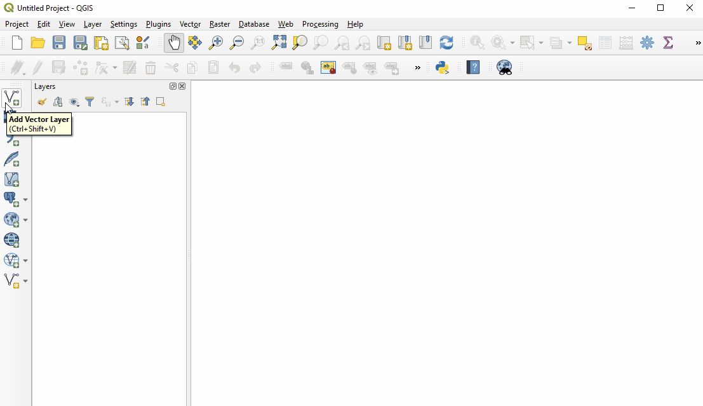
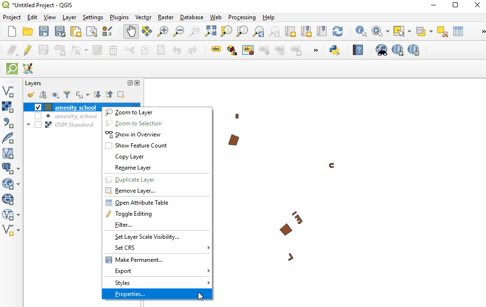
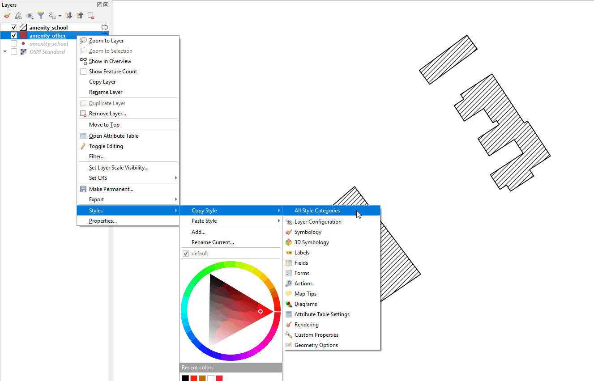
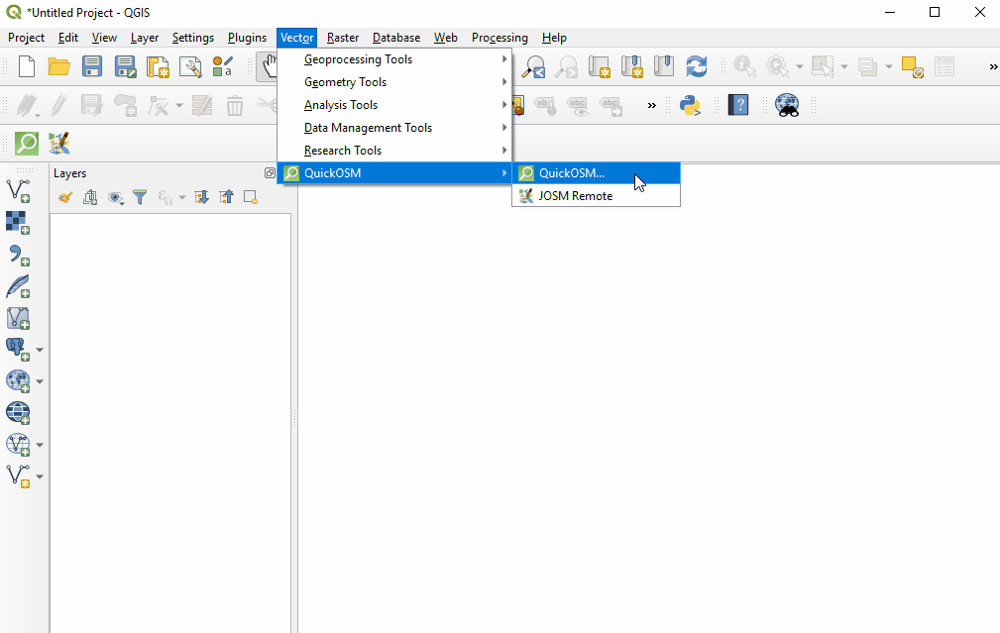

7.1 Introduction to QGIS
Course Objectives
This section cover basic skills necessary to use QGIS. By the end of this section, you should be able to:
- Learn to install QGIS
- Be able to navigate QGIS
- Understand on how to adding the data in QGIS
- Understand on how to style layer in QGIS
- Learn how to install plugin QuickOSM and QuickMapServices in QGIS
Learning Activities
QGIS is a free and open source geographic information system (GIS) program. GIS programs allow users to display, manage, and analyze geospatial information on the computer, and create map products. Geospatial data that can be used in GIS includes aerial imagery, GPS data, and spatial datasets. Following completion of this section, a new user should be prepared to navigate and work with data in QGIS.
Installing QGIS
QGIS is available for download for the following operating systems:
- Windows
- Mac OS
- Linux
Skills and Technology Needed
- Computer with
- Windows, Mac, or Linux operating system
- Sufficient free disk space (approx 10GB) and administrator rights to install software
- Recommended: computer mouse
For Windows Prior to installation, you need to determine whether or not your computer runs on a 32-bit or 64-bit system.
- Open the Start Menu, right-click on “Computer”, and select “Properties”.
- Under “System”, the correct system type will be listed.
Installing from Shared File If you are offline, you will need to install QGIS from a shared file. The QGIS Installer can be downloaded and shared via USB. This file can be shared with colleagues and others who wish to install the program. To install from a shared file:
- Go to folder shared to you and downloaded to your computer.
- Select the appropriate installer folder based on your operating system (Windows 32-bit; Windows 64-bit; or Mac).
- Open the installer to begin the installation process.
Installing from QGIS Website If you have an internet connection, you can download directly from the QGIS website. Additionally, it is highly recommended to download software directly from the QGIS website whenever possible. This ensures that you have the most up-to-date version of the program. The QGIS file is larger than 300MB and may take a long time to download, depending on your internet connection.
To install:
- Visit: http://www.qgis.org/en/site/forusers/download.html
- Select your appropriate operating system (i.e. Windows, Mac, Linux).
- For Windows - select your approprite system (32-bit or 64-bit).
- Click on the QGIS Standalone Installer to begin the download process.
- Once installed, open the installer to begin the installation process.

Considerations when installing QGIS for large numbers of individuals
- Consider internet connectivity and capacity prior to installing QGIS for large numbers of individuals via internet. It is highly recommended that prior to the training/workshop, installation files are downloaded and loaded onto USB drives for offline installation.
- When downloading offline installers for a large group, make sure to download an installer for all operating systems. Note: it will be important to download the Windows installer for BOTH 32-bit and 64-bit.
- The downlaod and installation process often takes longer than anticipated, especially when factoring in technical skills and hardware compatibility. Therefore, it is recommended to begin download and installation process early in the training or during breaks to ensure a smooth process and adherance to agenda.
- Prior to the training/workshop, request attendees to make sure that they have enough space on their computers (10GB+) for installation of QGIS.
Navigating QGIS
To open QGIS, open the QGIS folder on your desktop. In this folder, find QGIS Desktop. Double-click to open this program

Taking a long time? Don’t panic! QGIS can take a few minutes to load.
Familiarize yourself with the various parts of the QGIS browser, hover your mouse over icons to view names of various tools. Note: Your browser may have different tools than the image below.
- Layers panel - This is where layers (i.e. imagery, building layers) will be listed. The order of layers in the panel impacts the order of layers in the map - in other words, the layer at the top of the list will appear as the top layer in the map.
- **Toolbars **- Most of the tools you will regularly use in QGIS will appear as icons in the toolbars at the top, such as save, zoom, pan. The number of toolbars depends on various features you have activated or installed.
- Map Canvas - When layers are added to the Layers Panel, they will appear in the map canvas.
- Status Bar - Coordinates, scale, and projection will appear in the Status Bar.

Adding Data
Hover your mouse over the tools until you find the “Add Vector Layer” tool. Click on this icon to open the Add Vector Data dialog

Click the ‘…’ button under Source and navigate to the location on your computer where you have a saved vector layer (i.e. .shp, .geojson) Select the file and ‘open’.

For more information on exporting data from OSM, see instructions on QuickOSM and Export Tools.
Styling Layers
Data layers can be styled in three ways: opening the properties tab, copying from other layers in the project, and importing a .qml style.
Manually select a style:
Right-click on the point layer and select ‘Properties’. (Alternate: Double-click on a layer in the Layers Panel.)

Select ‘Style’ from the left-hand menu. There are many changes and styles that can be made in this window. To complete a basic style change, select ‘Simple Fill’ near the top of the window. Now you can change the Fill Color, Fill Style, Stroke (outline) Color, Stroke (outline) Width, Stroke (outline) Style and more to your own choice.

Select ‘Ok’ to see your changes in the project.
You can also select from various preset styles in the main style window.

Copy styles from another data layer:
Right-click on any of the other layers. Select ‘Style’, then ‘Copy Style’, and ‘All Style Categories’.

Next, right-click on the layer you want to apply the style to. Select ‘Style’, then ‘Paste Style’, and ‘All Style Categories’. Styles from point layer styles can only be copied and pasted to other point layers, polygon layers styles can only be copied and pasted to other polygon layers, etc.

Styling a layer from an imported .qml file
A .qml file contains style information, including labels, exported from a layer. This file can be saved and shared to ensure consistent use of particular styles, for example, if an organization uses a particular color scheme and font for all maps.
Prior to importing a .qml file into QGIS, you will need to receive or download a .qml file. Practice .qml files and .shp files can be found here.
- Double-click on a layer in the Layers Panel or right-click on the point layer and select ‘Properties’.
- Select ‘Style’ from the left-hand menu.
- In the lower left hand corner of the Style window, select the ‘Style’ button. Click ‘load’ style.
- Navigate to and select the .qml saved on your computer.
- Click ‘Ok’. Your layer will assume all style choices saved to the .qml file.
Installing Plug-ins
Tools and skills required
- Internet connection
- Installed QGIS
- Navigating QGIS
- For QuickOSM: OSM Tagging and Data Models
Estimated time: <5 minutes, depending on internet connection
Plugins allow you to extend the functionality of QGIS. These plugins can range from allowing data to be directly downloaded from OSM to QGIS to tools that assist with analysis.
In this exercise we shall install and use two plugins: QuickMapServices & QuickOSM.
| Tips: |
|---|
| Managing and installing plugins requires an internet connection. If the Plugin Manager is not working, check your internet connection. Considerations for working with large groups and/or in low-internet settings Plug-in Manager requires a consistent internet connection to download plugins. It is highly recommended for training and workshop facilitators to pre-download offline versions for sharing. |
To install plugins, click on the menu item Plugins ‣ Manage and Install Plugins.

QuickMapServices
QuickMapServices allows you to add free, online basemaps to your QGIS maps, including OSM basemaps.
| Note: |
|---|
| QuickMapServices provides online basemaps, use of these layers requires a consistent internet connection. |
In the Plugin Manager dialog box that opens, find the QuickMapServices plugin. To do so, click on the search bar and type ‘QuickMapServices’, the plugin will appear in the list. Then click the Install Plugin button.

Once installed, QuickMapServices can be accessed in the top menu Web ‣ QuickMapServices.
In the QuickMapServices sub-menu, several types of basemaps can be accessed including OSM.

For aerial imagery, in the QuickMapServices sub-menu, open ‘Settings’. Click the ‘More Services’ tab. Select ‘Get Contributed Pack’.

Return to the QuickMapServices sub-menu. There will now be a long list of options for basemaps, including Bing.

QuickOSM
QuickOSM allows you to select and download OpenStreetMap data for use in QGIS. QuickOSM works by extracting specific data based on OSM based on tags (key=value pairs) and an area of interest.

Once installed, QuickOSM can be accessed in the top menu Vector ‣ QuickOSM ‣ QuickOSM
| Note: |
|---|
| When downloading data through QuickOSM, it is best to have a basemap layer focused on your area of interest (see QuickMapServices) and/or at least one shapefile/geojson layer in the area of interest. This guides QuickOSM in downloading data for the correct area of interest. |

To download data in QuickOSM in QGIS, you will need to build queries to download the exact data that you need. QuickOSM makes building queries easier, but you will still need to know the tags (i.e. keys and values) to generate data. It will become easier to remember these tags as you gain experience working with OSM - in JOSM, QGIS, and other programs.
Below are some examples of common tags used in OSM queries.
| amenity | school |
| place_of_worship | |
| bar | |
| bank | |
| highway | primary |
| residential | |
| path | |
| office | goverment |
| ngo | |
| shop | clothes |
| tailor |
| Tips: |
|---|
| Key: For resources, on keys and values to use, see OSM Tagging and Data Models. |
| Value: Multiple values can be strung together by separating with a comma (for example: amenity=school,hospital). To download all possible values of a key (i.e. amenity=*), leave the value field blank. |
| Extent: Selecting the extent chooses the area QuickOSM will search for and download data from. There are multiple options you can select from when choosing the * extent: |
- In:
- Around:
- Canvas Extent:
- Layer Extent:
- Not Spatial: Extent of the map canvas is best suited when you do not have a shapefile/geojson that covers your area of interest (i.e. administrative boundaries) and/or a small area of interest. To base your extent on a layer, use the drop down menu on the right to select the appropriate layer. |

Once providing your key and value, and selecting your extent, click ‘Run Query’.
If your query is not working:
- Did you use capital letters in your keys and values? Make sure keys and values are in lowercase. For example: key=amenity value=school NOT key=Amenity and value=SCHOOL
- Did you use the correct spelling in your keys and values? Make sure keys and values are spelled EXACTLY as they are in OSM guides. Otherwise QuickOSM will be looking for the wrong tag. For example: key=amenity NOT key=amenities
| Note: |
|---|
| To large of an area, or too much data to download, can overload the API or will be too much for a slow internet connection. If you are having difficulty downloading data, try reducing the area or limit the data download by changing your tags. For example, downloading all buildings in Africa, even some cities, is too large for QuickOSM. Instead try downloading a smaller area or restricting to all building=school. |
[Quiz] Check Your Knowledge
-
QGIS requires you to donate to their platform to support the development and QGIS community.
a. True
b. False
-
What is plugin that allows you to download OSM data directly from OSM to QGIS?
a. QuickLoad
b. QuickMapServices
c. OSM Download Manager
d. QuickOSM
-
Below are several ways to load and style layers in QGIS, except:
a. Manually select a style
b. Copy styles from another dataset
c. Styling layer from .qml
d. Read style from ESRI symbology
Answer: 1. B| 2. D| 3. D
Activity Checklist
Now you already understand what is QGIS and how QGIS can help you to visualize your dataset, especially OSM dataset. By the end of this section, you should be able to:
- Download and install QGIS
- Navigate QGIS
- Adding data in QGIS
- Styling data layer
- Installing additional plugins
Additional resources
Presentation:
Resources:
- QGIS Training Manual: https://docs.qgis.org/2.18/en/docs/training_manual/
- QGIS Tutorials: https://www.qgistutorials.com/en/docs/learning_resources.html
- Further QGIS Install instructions: https://docs.qgis.org/testing/en/docs/user_manual/introduction/getting_started.html#installing-qgis